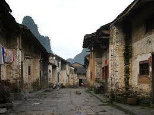

click to get more information.
Here's the quote of Fenghuang County from Wikipedia:
Fenghuang County (simplified Chinese: 凤凰县; traditional Chinese: 鳳凰縣; pinyin: Fènghuáng Xiàn; literally: "phoenix county") is a county of Hunan Province, China, it is under the administration of Xiangxi Autonomous Prefecture.Located on the western margin of the province and the southern Xiangxi, it is immediately adjacent to the eastern edge of Guizhou Province. The county is bordered to the north by Huayuan County and Jishou City, to the east by Luxi County, to the southeast by Mayang County, to the southwest and the west by Bijiang District of Tongren City and Songtao County of Guizhou. Fenghuang County covers 1,745 km2 (674 sq mi), as of 2015, It had a registered population of 428,294 and a resident population of 363,700.[4] The county has 13 towns and 4 townships under its jurisdiction, the county seat is Tuojiang (沱江镇).[5]